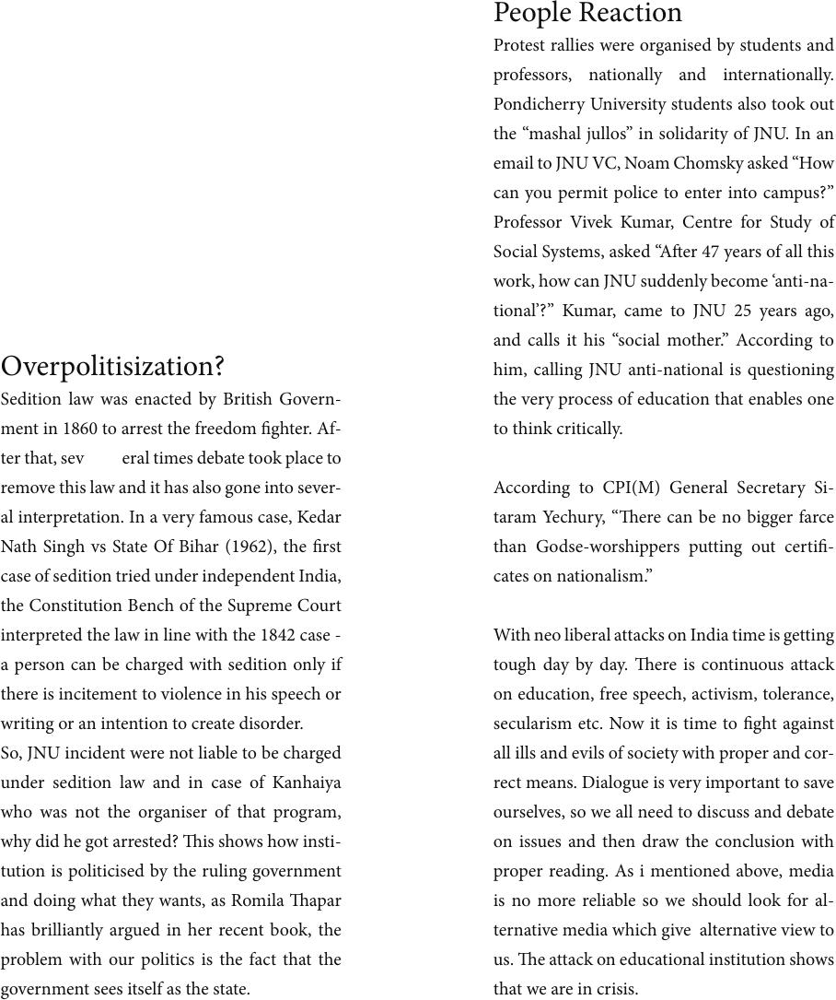

Overpolitisization?
Sedition law was enacted by British Govern-
ment in 1860 to arrest the freedom ghter. Af-
ter that, sev eral times debate took place to
remove this law and it has also gone into sever-
al interpretation. In a very famous case, Kedar
Nath Singh vs State Of Bihar (1962), the rst
case of sedition tried under independent India,
the Constitution Bench of the Supreme Court
interpreted the law in line with the 1842 case -
a person can be charged with sedition only if
there is incitement to violence in his speech or
writing or an intention to create disorder.
So, JNU incident were not liable to be charged
under sedition law and in case of Kanhaiya
who was not the organiser of that program,
why did he got arrested? is shows how insti-
tution is politicised by the ruling government
and doing what they wants, as Romila apar
has brilliantly argued in her recent book, the
problem with our politics is the fact that the
government sees itself as the state.
People Reaction
Protest rallies were organised by students and
professors, nationally and internationally.
Pondicherry University students also took out
the “mashal jullos” in solidarity of JNU. In an
email to JNU VC, Noam Chomsky asked “How
can you permit police to enter into campus?”
Professor Vivek Kumar, Centre for Study of
Social Systems, asked “Aer 47 years of all this
work, how can JNU suddenly become ‘anti-na-
tional’?” Kumar, came to JNU 25 years ago,
and calls it his “social mother.” According to
him, calling JNU anti-national is questioning
the very process of education that enables one
to think critically.
According to CPI(M) General Secretary Si-
taram Yechury, “ere can be no bigger farce
than Godse-worshippers putting out certi-
cates on nationalism.”
With neo liberal attacks on India time is getting
tough day by day. ere is continuous attack
on education, free speech, activism, tolerance,
secularism etc. Now it is time to ght against
all ills and evils of society with proper and cor-
rect means. Dialogue is very important to save
ourselves, so we all need to discuss and debate
on issues and then draw the conclusion with
proper reading. As i mentioned above, media
is no more reliable so we should look for al-
ternative media which give alternative view to
us. e attack on educational institution shows
that we are in crisis.